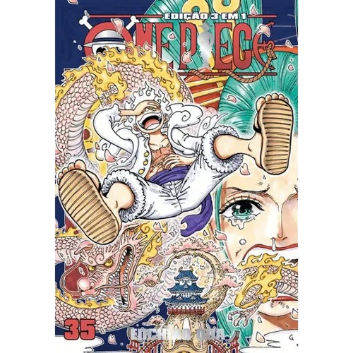

Manga mais lido de 2025
One Piece
One Piece é uma série de mangá criada por Eiichiro Oda e publicada
desde 1997. A história acompanha Monkey D. Luffy, um jovem que ganha
poderes elásticos após comer uma Akuma no Mi, e que parte para o mar
com o sonho de se tornar o Rei dos Piratas.
Ao longo da jornada,
ele reúne a tripulação dos Chapéus de Palha e enfrenta governos,
piratas poderosos e diversas ameaças em busca do lendário tesouro
conhecido como “One Piece”.
Em 2025, One Piece foi o mangá mais vendido do Japão, liderando o
ranking anual da Oricon. Durante o ano, a obra vendeu aproximadamente
4,2 milhões de cópias em volumes físicos, superando todos os outros
títulos no mercado. Mesmo após mais de duas
décadas de
publicação, a série continuou demonstrando enorme força comercial e
grande engajamento do público, consolidando-se mais uma vez como o
mangá mais lido do ano em termos de vendas.
